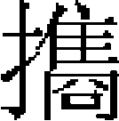

外國九
斡羅斯欽察 康里 馬札兒 波蘭
斡羅斯，其族曰司拉弗哀。北齊末，日耳曼人南侵羅馬，日耳曼之地遂爲司拉弗哀人所據。唐以前爲西北散部，屬於柔然、突厥。
唐末，司拉弗哀人柳利哥兄弟三人皆有智勇，侵陵他族，爲衆部之長。其所居之地曰遏而羅斯，遂以此爲部落之名。遏而羅斯急讀爲斡羅斯，亦譯爲兀魯斯，又曰厄羅斯。柳利哥建國在唐咸通三年。其部初無城郭，至是，築諾物哥羅特。「諾物」謂新，「哥羅特」謂城也。
柳利哥亦譯爲魯立克。其弟曰西納非，曰忒魯博爾，分據倭齊羅湖之北與伯拉斯之地。後西納非、忒魯博爾皆卒，無子，柳利哥收其地，自立爲斡羅斯王。在位十七年，卒。
子依哥爾幼，其相阿列克攝政，拓地而南，遷都於計掖甫。阿列克爲毒蛇所齧而卒，依哥爾始親政，以兵四十萬、船萬艘伐希臘，泝泥泊河渡黑海，至君士坦丁，希臘人敗之。依哥爾至屬部徵餉，爲部人所殺。
子薩威亞得司拉夫亦幼，王后哦轕聽政。后有智略，始分立郡縣，設官徵税，國中大治。薩威亞得司拉夫年長，乃歸政焉。薩威亞得司拉夫再伐希臘，又大敗，殁於陣。
子雅爾波拉克嗣，後爲其弟弗拉得莫爾所殺。弗拉得莫爾自立爲王，時宋太平興國五年也。
弗拉得莫爾卒，子斯昧挨多彼睦嗣，其弟雅兒阿司拉夫與之争，分爲兩部。兄卒，雅兒阿司拉夫始有全國之地。卒，子衣士埃阿司拉夫嗣。卒，弟威司埃烏拉嗣。卒，衣士埃阿司拉夫之子斯昧埃多彼睦嗣。卒，威司埃烏拉之子弗拉得莫爾第二嗣。卒，子斯的斯拉嗣。自後諸部皆擁兵自立，壤土分裂，斡羅斯王國僅有物拉的迷爾。歷十餘王，至威司埃烏拉第二，與諸部連和，兵争始息。卒，子攸利第二嗣。
時太祖已平西域，斡羅斯鄰部曰奇卜察克，納蒙古逃人，太祖索之，不與。十六年，命哲别、速不台進軍裏海之西，以討奇卜察克，殺奇卜察克酋霍灘之弟玉兒格及其子塔阿兒。十七年，遂自阿索富海踏冰以至黑海，入克勒姆之地。霍灘遁入斡羅斯境，乞援於其壻哈力赤王穆斯提斯拉甫。
穆斯提斯拉甫能用兵，屢勝同族，視蒙古蔑如也。允其妻父之請，遣告計掖甫王穆斯提斯甫拉羅慕諾委翅，集列邦議兵事。於是扯耳尼哥王穆斯提斯甫拉司瓦托司拉甫勒委翅與南境諸王皆至計掖甫議，出境迎擊，勿待其至。並告於首邦物拉的迷爾王攸利第二，請出兵爲援，分軍自帖尼博耳河、特尼斯特河以至黑海東北。
哲别、速不台聞斡羅斯起兵，遣使十人來告：「蒙古所討者奇卜察克，夙與斡羅斯無釁，必不相犯。蒙古惟敬天，與汝國宗教相若。奇卜察克素與汝有兵怨，盍助我攻仇人？」諸王謂：「先以此言餌奇卜察克，今復餌我，不可信。」殺其使。二將復遣使至，謂：「殺我行人，其曲在汝。天奪汝魄，自取滅亡。今以兵來，請決勝負。」霍灘又欲殺之，斡羅斯人釋之歸，刻期約戰。
哈力赤王先以萬騎東渡帖尼博耳河，敗蒙古前鋒，獲裨將哈馬貝，殺之。蒙古軍退，追至喀勒吉河，遇二將大軍。時斡羅斯兵八萬二千，分屯南北，南軍爲計掖甫、扯耳尼哥等部之兵，北軍爲哈力赤等部及奇卜察克兵。哈力赤王輕敵貪功，不謀於南軍，獨率北軍渡河，戰於孩耳桑之地，勝負未決。而奇卜察克兵怯敵先退，陣亂，蒙古軍乘之，斡羅斯人大敗。哈力赤等王得脱，渡河而西，即沈其舟。後至者不得渡，悉被殺。南軍不知北軍之戰，亦不知其敗。蒙古軍猝至，攻其營，三日不下，誘令納賄行成。俟其出，疾攻之，殲馘略盡。獲計掖甫、扯耳尼哥等部之王，縛置於地，覆板坐其上，飲酒歡會，多壓斃者。哲别令曷思麥里檻致扯耳尼哥王於太子朮赤，誅之。是役也，斡羅斯亡六王、七十侯，兵士十死八九。
攸利第二得請兵信令，其姪遏羅斯托王瓦西耳克康斯但丁諾委翅率兵往援，至扯耳尼哥，聞軍敗，亟引退。是時，列城無備，不能爲戰守，惟俟兵至乞降，舉國大震。而哲别等西至帖尼博耳河，北至扯耳尼哥城、諾拂郭羅特、夕尼斯克城而止。是冬，大軍東返。
斡羅斯雖敗於蒙古，境内未遭蹂躪，迨兵退，各部内閧如故，不復慮外患。
太宗七年，以奇卜察克、斡羅斯諸部未服，遣諸王出師，以拔都爲統帥，速不台副之。八年，速不台首入不里阿耳。九年，入奇卜察克。是年冬，遂入斡羅斯。
自孩耳桑之戰至是，已十有四年，斡羅斯人久不以蒙古爲意。毛兒杜因人與斡羅斯有兵怨，導大軍自東南入，取勃欒思克、别兒郭羅惕等城。南境諸王呦里與其弟羅曼分主列也贊、克羅姆訥二城，乞援於攸利第二，兵不亟至。蒙古軍招降列也贊，令出民賦什一爲歲貢，呦里不從，城陷，呦里闔門殉之。攸利第二遣子務賽服洛特帥衆來援，而列也贊已破，乃援克羅姆訥，戰於城下。羅曼陣没，務賽服洛特逃歸物拉的米兒，大軍遂攻拔克羅姆訥。
進至莫斯科，長驅直入，獲攸利第二之孫。東趨物拉的米兒。時攸利第二令其子務賽服洛特木思提思老弗哀居守，而自引兵北駐錫第河，以待計掖甫王牙羅思剌弗哀、珀列思剌弗哀勒王士委阿脱思剌弗哀之援兵。大軍至，令攸利第二之孫在城下，招降不肯下，乃殺之。分軍下蘇斯達耳城而歸。
十年春，合圍物拉的米兒，凡七日，城陷。連拔攸利、計掖甫、遏羅斯托弗哀、雅洛思剌弗哀、喀辛特弗哀耳、的彌特洛甫勒、佛洛格的赤等城，所至成墟。時攸利第二尚軍錫第河上，大軍至，攸利第二與二姪皆戰没，兵士得脱者才什二三。拔都益北趨諾物哥羅特，未及城百餘里，阻潦而退。是爲斡羅斯極北境，始立國時定都於此。
一軍攻秃里思哥城，其王瓦夕里堅守不下，殺蒙古軍數千，閲四十九日始克，屠之，流血成渠。獲瓦夕里，投血渠中，斃之。謂其城曰卯危八里。是冬，圍阿速蔑怯思都城。
十一年春正月，攻拔之。略不里阿耳北境，直至烏拉嶺西北地。計掖甫者，斡羅斯舊都，南部之大城也。攸利第二王既戰殁，其弟計掖甫王牙羅思剌弗哀往援不及，乘大軍退，遂入物拉的米兒，嗣其兄位。而扯耳尼哥王米海勒，亦乘其北行，轉據計掖甫。
十二年，拔都至珀列思剌弗哀勒城，降之。攻下扯耳尼哥城，東掠戞魯和城，至於端河。既絶計掖甫旁援，而帖尼博耳河不得渡，蒙格駐河東，遣人諭降計掖甫，使者被殺。冬，帖尼博耳河凍合，大軍渡河，米海勒逃往波蘭，令其將狄米脱里居守，設備甚嚴。大軍晝夜環攻，克之，釋不誅。復下哈力赤城，達尼耳王亦遁。進攻波蘭、馬札兒，分軍西循奥斯大里亞境，直抵地中海北維尼斯國界。又一軍擾奥斯大里亞之柯倫城、韋兒乃斯達特城，皆旋退。會太宗崩，壬寅春，凶問至軍中，拔都下令班師。時斡羅斯北部已盡降，其列邦並受蒙古封。
定宗即位，召物拉的米兒王牙羅思剌弗哀、扯耳尼哥王米海勒入覲。米海勒至，以不肯拜跪，被殺。牙羅思剌弗哀歸而道卒，或謂在和林中毒。拔都立其子安德累第一主斡羅斯北部，歲入貢賦。其南部哈力赤王達尼耳，乘拔都入馬加，仍回所部，計掖甫等地皆爲所屬。拔都歸後，遣使諭降，達尼耳乞援於天主教王。教王脅以去東教，入西教，乃肯援。達尼耳從之，而援仍不至，復返東教，臣服蒙古。
定宗元年，自至斡兒朵，謁拔都。二年，又來謁拔都，厚禮之，使主南部，納歲賦。
拔都卓帳亦的勒河下游，曰薩萊，其頂用金。凡斡羅斯諸王嗣位，必先至金斡爾朵謁見，再至上都朝覲，錫以册命。路遠，往返經年，所部或叛亂，不能猝制，咸憚苦之。
憲宗七年，拔都弟伯勒克嗣爲金斡兒朵汗，始遣官吏括斡羅斯户口，計出賦，每丁歲輸狐皮一、白熊皮一、黑貂皮一、常貂皮一、獺皮一。以八思哈三人總其事，一治蘇斯達爾，一治勒冶贊，一治謨洛姆。田賦十取一，牛羊馬百取一，教士皆免賦。諾拂郭羅特城不服，他城應之。斡羅斯王阿拉克三德知不能抗，鎮撫其民，復謁伯勒克，請減賦。伯勒克拘之，旋遣歸，卒於中途，或謂爲伯勒克所毒。
伯勒克不受朝廷約束，斡羅斯諸王乃朝覲於薩萊，不復至上都。既而哈力翅王達尼爾逐蒙古官吏，吞併他部之衆。伯勒克遣忽侖薩赫來討，以兵弱不敢輕進，復以布侖台代之。布侖台者，從拔都征馬加之舊將也。布侖台諭達尼爾歸命，助攻力拖部，達尼爾畏而從之，使其弟瓦西里克從布侖台平力拖。時憲宗八年也。
逾年，拔都諸弟諾垓等伐波蘭，達尼爾之子弟復從征，平森他米爾以至克拉克。
及忙哥帖木兒嗣爲金斡爾朵汗，斡羅斯諸王互相讒構，洛斯多王喝來伯瓦夕里克委特，譖勒冶贊王羅曼倭爾格委特信回回教。至元十六年，忙哥帖木兒召勒冶贊王至，殺之。洛斯多王之子又譖勒冶贊王子於諾垓，引兵伐勒冶贊。是年，阿剌叛，徵兵於物的米爾王狄迷特里，遣其弟安得累從軍，平阿速之亂，焚高喀斯山北脱甲柯甫城。
十七年，哈力赤王勒輔從金斡爾朵兵，攻波蘭柳勃林城，進至森地米爾，爲波蘭人所敗。既而物拉的米爾王之弟安得累阿來三德勒委特，訴其兄之逼於金斡爾朵汗脱脱蒙哥。十九年，脱脱蒙哥出兵，攻物拉的米爾，直至諾拂哥羅特，狄迷特里奔於諾垓。二十年，諾垓仍立狄迷特里爲物拉的米爾王，時庫爾斯克王附於脱脱蒙哥，諾垓怒伐之，又殺配思克服洛郭爾王士委托司拉拂哀，皆斡羅斯之諸王也。
二十七年，斡羅斯諸王又訴物拉的米爾王狄迷特里之過，金斡爾朵汗脱脱討之，狄迷特里奔於諾物奇羅特。是年，狄迷特里卒，其叔父彌海勒第二嗣。莫斯科王克攸利第三欲得首邦之位［一］，脱脱以彌海勒第二年長，不允其請。未幾，月思别爲金斡爾朵汗，攸利第三娶其妹孔察哈，遂與蒙古將喀瓦惕，攻物拉米爾，彌海勒第二退於持威亞之地。攸利第二追之，兵敗，孔察哈及蒙古將士皆爲彌海勒第二所俘。知爲貴主，禮而歸之，中道卒。攸利第三乃以鴆殺公主訴於金斡爾朵汗月思别。月思别本庇彌海勒第二，及聞鴆殺孔察哈，大怒，召彌海勒第二至，囚之。已而知其無罪，遣歸。攸利第三賄月思别左右，矯命殺之，襲位受封。
至治三年，攸利第三貢不如額，月思别召而讓之，中途爲彌海勒第二之子德彌特里所殺。月思别以其擅殺論抵，而封其弟阿來克三得爲特威爾王，以雪其父之冤。阿勒克三得嗣位，三年，欲盡殺蒙古人之居忒菲爾者。事聞，金斡爾朵汗命攸利第三弟伊葛爲王，諸藩盡受約束。進討阿勒克三得，伊葛率諸藩之衆，攻陷忒菲爾，械送阿勒克三得及其子於金斡爾朵，殺之。伊葛知欲滅蒙古，非聯合諸藩同心禦之不爲功，以人心未一，故奉蒙古之命惟謹。又以各城賦税皆由蒙古官徵收，乃以計紿之，請變通税法，由莫斯科王額徵轉輸蒙古。於是利權在握，益富强，諸藩之貧乏者售其地爲己有。國人以伊葛喜牟利，稱爲界利帶云。時希臘教最盛，其至貴者曰主教長。凡主教長所居之地，即爲都城。伊葛欲以莫斯科爲都，賂金斡爾朵汗，命主教長由弗拉得莫爾移居莫斯科，供張甚盛，以動諸藩之觀聽。伊葛卒於至正元年，子西面嗣。卒，其弟伊葛第二嗣。卒，子底米丟嗣。時至正二十一年。與宗族立約，王位以父子相承，著爲令，違者以兵討之。
時金斡爾朵與白斡爾朵、藍斡爾朵諸汗相攻，不能兼顧斡羅斯諸部。底米丟乃下令曰：「凡藩部皆吾一本，宜共相和協，以翦仇敵。凡軍國諸務，宜禀命於吾。若恃蒙古爲援，抗不遵命者，諸藩共討之。」於是諸王咸奉底米丟之號令，國勢始振焉。
其後金斡爾朵汗集兵六十萬來伐，至敦河，斡羅斯兵二十萬陣於北岸。底米丟詢於衆曰：「候彼濟而攻之，與我渡河迎擊，孰利？」皆曰：「願渡河一戰。」衆遂渡。既登岸，斬纜沈舟，誓無退志。陣甫合，殺傷相當。底米丟密以奇兵從上流濟，抄蒙古兵之後，蒙古兵望見，疑爲援兵大至，遂潰走。是役也，斡羅斯人雖幸勝，然死傷亦衆。
越二年，白斡爾朵帖米斯汗乘其不備，進圍莫斯科，忒菲爾叛降蒙古，底米丟乃遣使乞和，貢獻如初。
欽察，其先爲武平北折連川按答罕山部族。唐以前稱其種曰庫莫奚，後徙西北，居玉里伯里山。本遊牧之國，與蒙古同。其酋有曲出者，號其部爲欽察，亦曰乞卜察克。曲出生唆末納，唆末納生亦納思。
太祖討平蔑兒乞，蔑兒乞酋之子忽都西奔欽察，亦納思納之。太祖使人往索曰：「汝奚匿吾帶箭之麋？亟以相還，不然禍且及汝！」亦納思曰：「逃鸇之叢薄，猶能覆之，我顧不如草木耶？」不予。太祖乃命者别、速不台移軍討之。
時亦納思已老，國内大亂，其子忽魯速蠻與欽察别部酋庫灘弟玉兒格、子塔阿兒及阿速、撒耳柯思等部來拒。大軍入高喀斯山，迫於險，乃甘言誘其諸酋曰：「爾我同類，無相害意，何爲助他族？」忽都速蠻引軍退，哲别、速不台敗阿速等部，又追襲玉兒格、塔阿兒，殺之。其别部酋八赤蠻竄亦的勒深林間，太宗命拔都等討之，禽殺八赤蠻。忽魯速蠻率其子班都察舉族迎降。
康里，亦曰康鄰。古高車之後，赤狄之餘種也。或曰其先爲匈奴之甥。無總汗，各有君長。遷徙隨水草，衣皮食肉，牛羊畜牧與蠕蠕同，惟車輪高大，輪輻至多。後徙於鹿渾海西北。或謂其部侵掠他族，虜獲騎不勝負，有部人能製車高大，勝重載，故以高車名其部云。
蒙古初，康里之名始著其地，直鹹海北，而西及於裏海，與欽察爲鄰。
太祖十六年，命哲别、速不台討欽察。十九年，乘勝東入，康里部衆迸散，與欽察並爲皇子朮赤封地。
馬札兒，亦曰馬加。與波蘭俱在斡羅斯之南，兩國相依如輔車。馬札兒之境，三面環山，形勢尤爲險固。初爲匈奴别部，北宋時，馬札兒人循北海之南，據其地有之。
太宗十二年，拔都平斡羅斯，遣貝達爾等進攻波蘭、馬札兒二國。時波蘭王波勒斯拉物卒，分地與四子。昆弟構兵，波勒斯拉物之孫波勒斯拉物第四爲克拉考部主，娶馬札兒王貝拉第四之女，屬地有珊特米而。波勒斯拉物之子康拉忒爲庫牙費部主，都城曰孛洛此克，屬地曰馬速費。又有一子曰亨力第二，爲昔來齊部主。其東南鄂噴拉諦波，而部主爲昔斯拉物，都城曰拉諦波。
拔都五道分進，前鋒入路孛林城，退還。是冬，又至費斯倫而河，履冰而渡，掠珊特米而，進至克拉考。其大將物拉狄米而與大兵戰於潑蘭尼也之地，敗潰。大軍分爲二：一往倫昔斯克、庫牙費，一留珊特米而。於是珊特米而、克拉考之兵合攻大軍於昔奪洛城，又大敗。波勒斯拉物第四與其母、妻遁入喀而巴脱山中，大兵遂入克拉考，進克珊特米而。
時亨力第二集衆三萬，分五軍：第一軍爲日耳曼人，謨拉費牙王子波勒斯拉物領之；二軍爲波蘭人，克拉考將蘇立斯拉物領之；三軍亦波蘭人，米昔斯拉物領之；四軍日耳曼人，其部長泊破渥斯台侖奥耳領之；五軍亨力第二自將。戰於乃寒河邊瓦而司達忒之地。日耳曼人先進，大敗。亨力第二馬傷，欲易馬，爲我兵所刺殺，懸首竿上，以徇各部。南至倭忒莫搠甫城，駐軍十五日，西攻拉諦波而，又移屯波勒昔斯克。西南入奥斯大里亞國，至白吕門部之謨拉費牙城。白吕門王曰文測斯拉物，懼大兵至，以重兵守白吕門及勞昔司二城，以五千人往援拉謨費牙。其將爲日耳曼人斯德姆貝而克，有勇名。文測斯拉物戒以平地勿與蒙古戰，但守鄂而謀次、白倫二城。既至白倫，分城兵千人與己兵往鄂而謀次。斯德姆貝而克入城，大兵已傅城下，城中縛草爲人以守陴，須臾，矢蝟集草人上。大兵誘以出城，不肯應。貝達克以爲怯，不設備，斯德姆貝而克乘夜襲之，我軍失利，貝達克殁於陣，遂解圍。東南入馬札兒，以應拔都之軍。
初，拔都自將攻馬札兒，其王爲貝拉第四，在位五年，拔都遣使招降，不應，又不設備，僅遣部將守喀而巴脱山口，伐木塞塗。馬札兒都格蘭城，亦曰布達城，濱杜惱河，河東爲丕思城，王宫在焉。欽察王庫灘來奔，從者四萬家。貝拉喜於得衆，而馬札兒人怨其王納庫灘以致寇，乃大譁。貝拉不得已，下庫灘於獄。
十二年春三月，拔都至，斧其塞塗之木，長驅而入。貝拉下令徵兵，集西北部之兵於丕思，以俟諸路之援，送妃嬪輜重於奥國。拔都從東北喀而巴忒山，踰達羅斯門。貝達克所部，從西北謨拉費牙，踰馬札兒門。合丹、速不台從東，至莫而陶，踰山以進，直抵丕思城下。貝拉堅守不出，有教士烏哥領以爲怯，率所部出戰。大兵退，誘入淖中，馬札兒人被重鎧，陷於淖不能出，盡爲大兵所殪。烏哥領僅以身免，怒貝拉不出援兵，讓之。馬札兒人以兵禍由於庫灘，大軍中又多欽察人，疑其與庫灘通，遂殺之。庫灘餘衆渡杜惱河，奔於布噶而牙。
貝拉在丕思城俟援兵，大兵破丕思北之委琛城。貝拉兵既集而出，大兵退，貝拉從之，屯於賽育河西，以千人守河橋。大軍在河東，出其不意，夜攻之，以砲兵逐守橋兵，又由上游泅渡。天曉，圍貝拉營。貝拉弟廓落蠻與烏哥領力戰，不能出，俱負重傷。晡時，大軍故開一路，使之出。馬札兒人潰走，大軍逐於後，斬馘略盡。烏哥領戰殁，廓落蠻逸歸丕思西南，入地中海，創發亦死。貝拉以有良馬，奔至土洛斯，遇其壻克拉考王波勒斯拉物第四。
大兵攻丕思城，民堅守不降，逾三日，克而屠之。合丹自莫而陶逾山，入脱蘭吾西而伐尼，襲破路丹城，選日耳曼人六百爲嚮導，至滑拉丁，爲馬札兒要害之地，外城爲木城。大兵至，即破之，又以砲攻破内城。城民入教堂，盡焚之，有遁入林中者，出覓食，又爲邏者所殺，殆無噍類焉。别軍入札納忒城，又至丕勒克，以斡羅斯、欽察、馬札兒人爲先驅，蒙古人自後督之，踐積尸登城。前無堅堡，與定宗軍合於拔都。
拔都渡杜惱河，攻格蘭，使合丹追貝拉。貝拉自土洛斯入奥斯大里亞境，至勒泊斯波而克，遇奥王勿來特吕希第二，勸以過杜惱河，貝拉從之。復乘機索賄，以國界三城爲質。貝拉

其孥至阿格拉拇城，伺敵動静，復往塔而馬西之司巴拉城，其妃自往克立薩堡，後與貝拉俱入地中海島中。合丹追貝拉不及，乃引軍東趨塞而維亞，旋奉拔都命班師。是時，太宗凶問至軍中，乃馬真皇后稱制元年也。拔都與合丹東返杜惱河，諸軍亦退。明年，貝拉始返丕思。初，貝拉屢求救於日耳曼王勿來特吕希，以與教主構兵，不能赴援，令其子嚴兵守境上。又以書告英吉利諸國：「若塔塔兒來，我兵不能禦，則各國皆危，不能保，請併力敵之。」值太宗崩，拔都亟率兵東返，故日耳曼諸國皆未受兵禍云。
後金斡耳朵汗屢伐波蘭，焚珊特密而。至元二十二年，脱脱哥王伐馬札兒，敗績而歸。次年，復入波蘭無城堡之地，焚掠殆徧，以病疫班師。
【校勘記】
［一］「莫斯克王」，下文作「莫斯科王」。本書卷一〇六《朮赤傳》附月思别傳亦兼作「莫斯科王」、「莫斯克王」。
本章完!